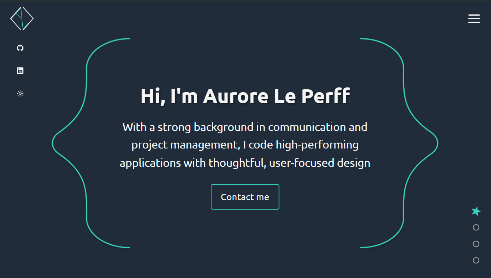
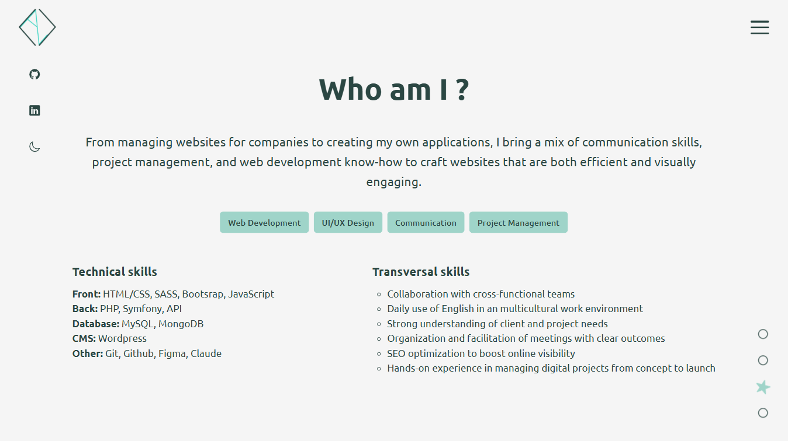
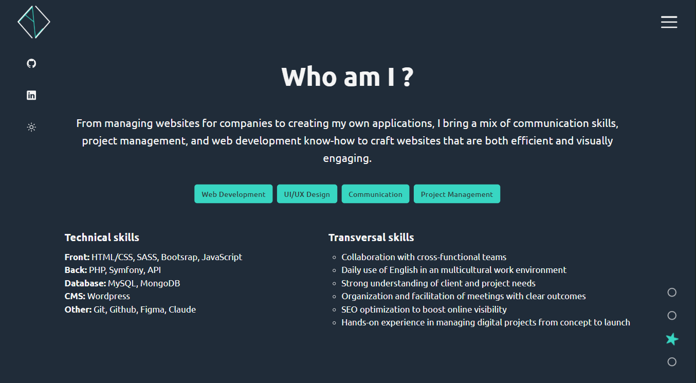
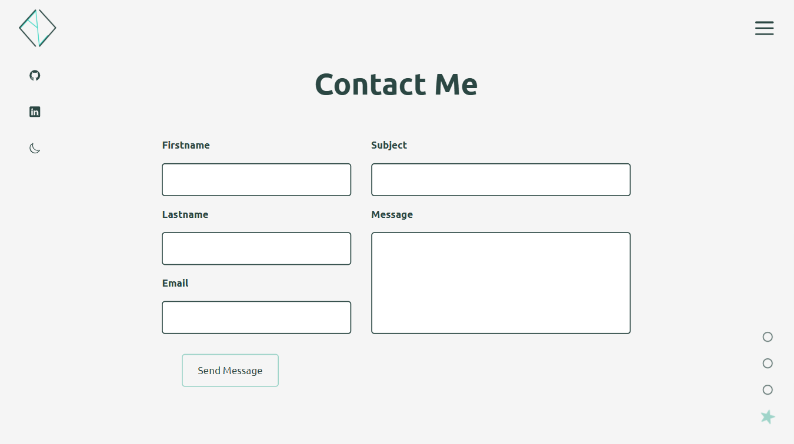
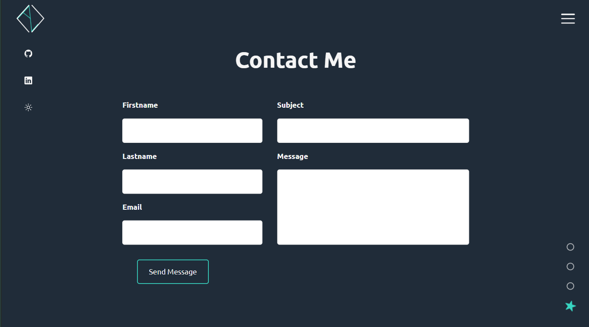
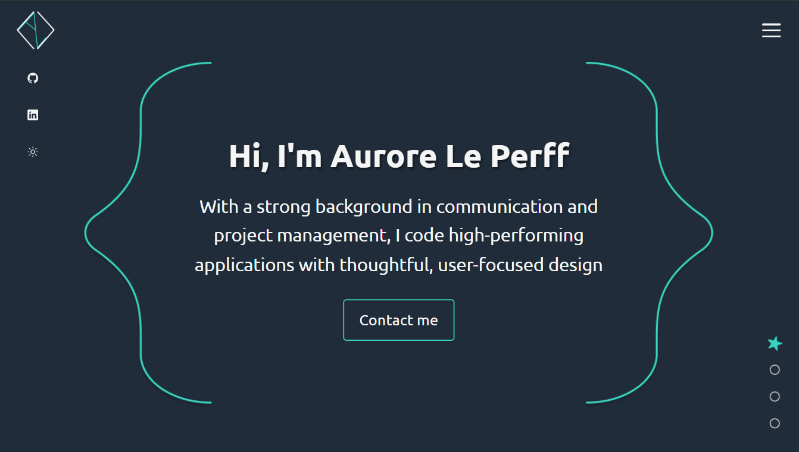
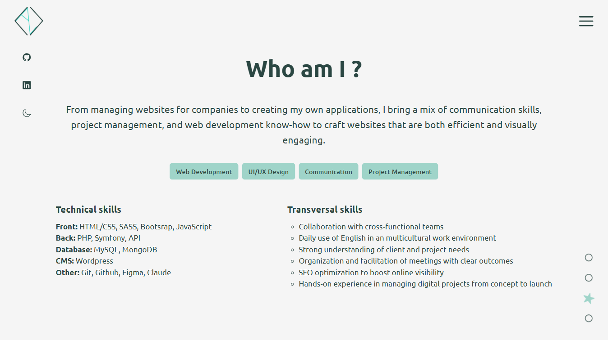
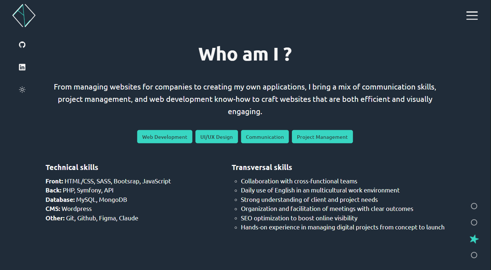
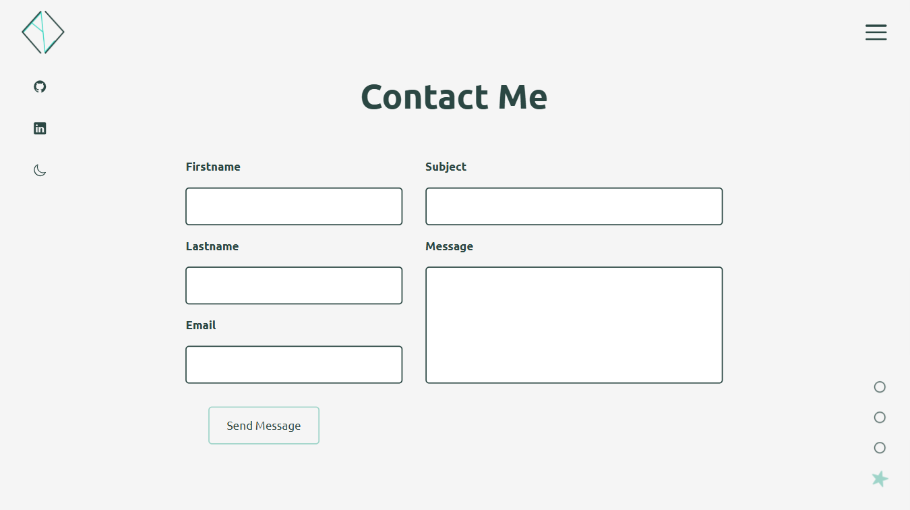
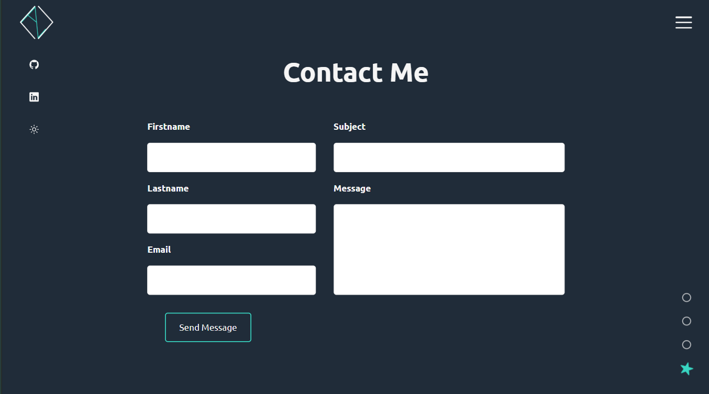

My Portfolio
A modern and responsive portfolio website to showcase my projects, skills, and experience as a web developer. Built with HTML5, CSS3, and JavaScript, featuring smooth animations, a dark mode toggle, and a contact form.
Features
- Dark mode / Light mode with persistence
- Responsive burger menu with smooth animations
- Projects filtering system by categories
- Section indicator with smooth scroll navigation
- Contact form with validation
- SEO optimized (meta tags, semantic structure, sitemap)
- Maintainable and modular CSS architecture
- Hosted on GitHub Pages with global CDN and automatic SSL
Development Specs
- Frontend: HTML5, CSS3, JavaScript (ES6+)
- Features: DOM Manipulation, Event Delegation, LocalStorage API
- Design: Mobile-first, Flexbox, CSS Grid Layout
- Performance: CSS Variables, Optimized animations, lazy loading
- Accessibility: Semantic HTML, ARIA labels, full keyboard navigation
- SEO: Meta tags, Open Graph, Structured data, XML sitemap
Desktop View
 









The Challenge
The main challenge of this project was creating a smooth and professional user experience without relying on any framework. I had to implement all interactive features from scratch: the dark mode system with user preference persistence, the responsive burger menu, and the project filtering system.
The project filtering system was particularly interesting to develop. I implemented a tag-based filtering mechanism that smoothly animates cards in and out when users switch between categories. The challenge was managing the transition states properly—I needed to ensure cards were hidden after the fade-out animation completed, not during it, to avoid janky visual effects.
Another important aspect of the project was improving accessibility through keyboard navigation. I wanted to make sure that every user, including those who rely on the keyboard instead of a mouse, could navigate smoothly through the site. I implemented logical tab order, visible focus states, and keyboard shortcuts for key interactions like opening the menu or switching projects. Ensuring accessibility wasn’t just a technical task, it was a way to make the experience truly inclusive.
Responsive Design
The application adapts seamlessly across all devices